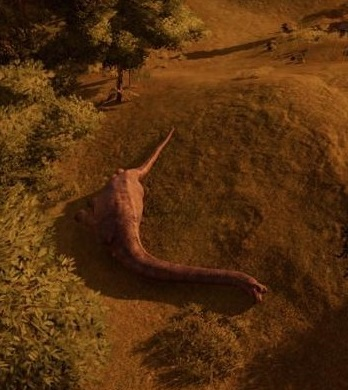
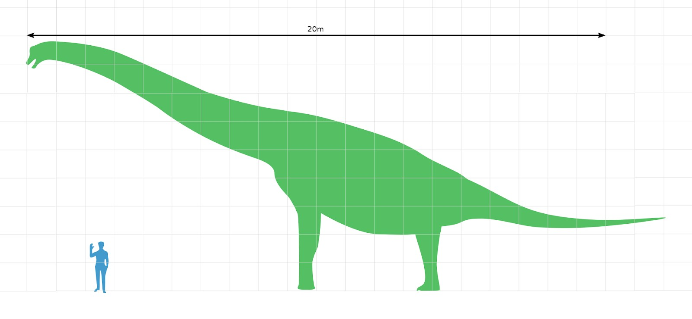
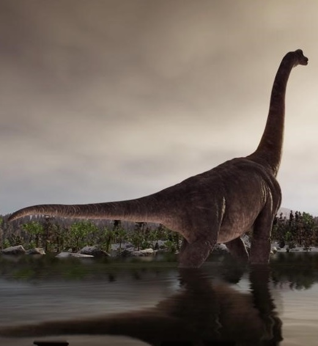
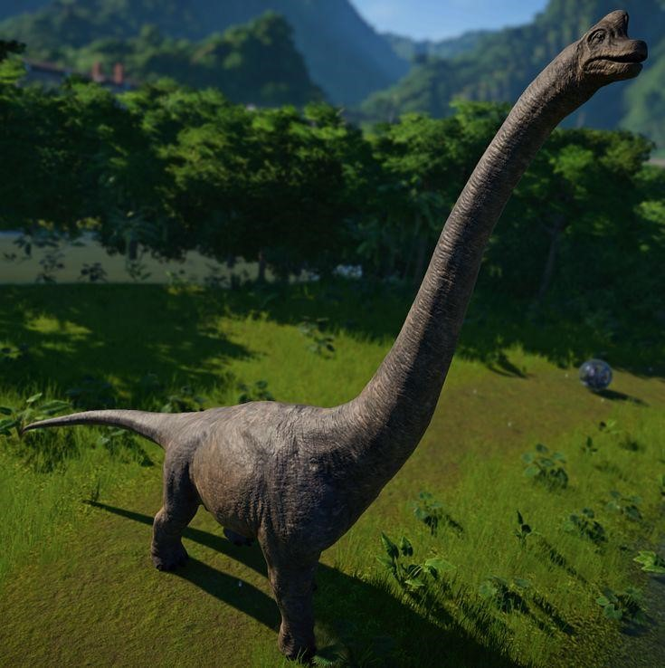

Brachiosaurus is a genus of herbivorous sauropod and one of the largest dinosaurs to have lived, weighing in at over 50 tons. Thanks to its long neck, brachiosaurus can feed on leaves from trees up to 12 meters high, eating up to 400 kg of vegetation every day, while its vast size means any potential predators tend to steer clear.
The first Brachiosaurus fossils were uncovered in 1900 in the Morrison formation, Colorado, and credited to Elmer S. Riggs, a celebrated American paleontologist. At the time, Brachiosaurus was considered to be the biggest dinosaur ever to have existed, although larger specimens have been discovered since.
Further discoveries of Brachiosaurus material in North America have been uncommon and consist of a few bones. To date, material can be unambiguously ascribed only to the genus when overlapping with the holotype material, and any referrals of elements from the skull, neck, anterior dorsal region, or distal limbs or feet remain tentative. Nevertheless, material has been described from Colorado, Oklahoma, Utah, and Wyoming, and undescribed material has been mentioned from several other sites.
In 1883, farmer Marshall Parker Felch, a fossil collector for the American paleontologist Othniel Charles Marsh, reported the discovery of a sauropod skull in Felch Quarry 1, near Garden Park, Colorado. The skull was found in yellowish white sandstone, near a 1-meter-long (3 ft 31⁄2 in) cervical vertebra, which was destroyed during an attempt to collect it. The skull was cataloged as YPM 1986, and sent to Marsh at the Peabody Museum of Natural History, who incorporated it into his 1891 skeletal restoration of Brontosaurus (perhaps because Felch had identified it as belonging to that dinosaur). The Felch Quarry skull consists of the cranium, the maxillae, the right postorbital, part of the left maxilla, the left squamosal, the dentaries, and a possible partial pterygoid. The bones were roughly prepared for Marsh, which led to some damage. Felch also collected several postcranial fossils, including a partial cervical vertebra and partial forelimb. Most of the specimens collected by Felch were sent to the National Museum of Natural History in 1899 after Marsh's death, including the skull, which was then cataloged as USNM 5730.
Most estimates of Brachiosaurus altithorax's size are based on the related brachiosaurid Giraffatitan (formerly known as B. brancai), which is known from much more complete material than Brachiosaurus. The two species are the largest brachiosaurids of which relatively extensive remains have been discovered. There is another element of uncertainty for the North American Brachiosaurus because the type (and most complete) specimen appears to represent a subadult, as indicated by the unfused suture between the coracoid, a bone of the shoulder girdle that forms part of the shoulder joint, and the scapula (shoulder blade). Over the years, the mass of the holotype specimen has been estimated within the range of 28.3–46.9 metric tons (31.2–51.7 short tons). Benson et al. suggested a maximum body mass of 56 and 58 metric tons (62 and 64 short tons), but these estimates were questioned due to a very large error range and lack of precision. The length of Brachiosaurus has been estimated at 20–22 meters (66–72 ft) per Paul and 18 meters (59 ft), and its height at 9.4 meters (303⁄4 ft) and 12–13 meters (39–43 ft).
It was believed throughout the nineteenth and early twentieth centuries that sauropods like Brachiosaurus were too massive to support their own weight on dry land, and instead lived partly submerged in water. Riggs, affirming observations by John Bell Hatcher, was the first to defend in length that most sauropods were fully terrestrial animals in his 1904 account on Brachiosaurus, pointing out that their hollow vertebrae have no analogue in living aquatic or semi aquatic animals, and their long limbs and compact feet indicate specialization for terrestrial locomotion. Brachiosaurus would have been better adapted than other sauropods to a fully terrestrial lifestyle through its slender limbs, high chest, wide hips, high ilia and short tail. In its dorsal vertebrae the zygapophyses were very reduced while the hyposphere-hypanthium complex was extremely developed, resulting in a stiff torso incapable of bending sideways. The body was fit for only quadrupedal movement on land.[12] Though Riggs's ideas were gradually forgotten during the first half of the twentieth century, the notion of sauropods as terrestrial animals has gained support since the 1950s, and is now universally accepted among paleontologists. In 1990 the paleontologist Stephen Czerkas stated that Brachiosaurus could have entered water occasionally to cool off (thermoregulate).
Brachiosaurus is thought to have been a high browser, feeding on foliage well above the ground. Even if it did not hold its neck near vertical, and instead had a less inclined neck, its head height may still have been over 9 meters (30 ft) above the ground. It probably fed mostly on foliage above 5 meters (16 ft). This does not preclude the possibility that it also fed lower at times, between 3 and 5 meters (9.8 and 16.4 ft) up. Its diet likely consisted of ginkgos, conifers, tree ferns, and large cycads, with intake estimated at 200 to 400 kilograms (440 to 880 lb) of plant matter daily in a 2007 study.Brachiosaurid feeding involved simple up-and-down jaw motion. As in other sauropods, animals would have swallowed plant matter without further oral processing, and relied on hindgut fermentation for food processing. The teeth were somewhat spoon-shaped and chisel-like.Such teeth are optimized for non-selective nipping, and the relatively broad jaws could crop large amounts of plant material. Even if a Brachiosaurus of forty tonnes would have needed half a tonne of fodder, its dietary needs could have been met by a normal cropping action of the head. If it fed sixteen hours per day, biting off between a tenth and two-thirds of a kilogram, taking between one and six bites per minute, its daily food intake would have equaled roughly 1.5 percent of its body mass, comparable to the requirement of a modern elephant.
The location of the fossils dates Brachiosaurus to the late Jurassic period, around 140-150 million years ago, and co-existed with many other dinosaurs including the notorious Allosaurus and Ceratosaurus. While Brachiosaurus mainly lived in the western United states, remains have been found as far away as Portugal and Tanzania.